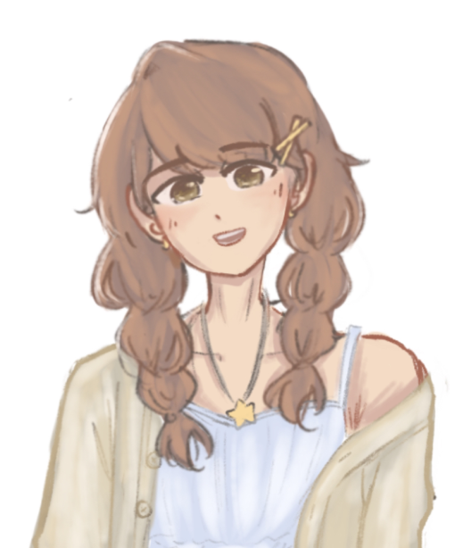
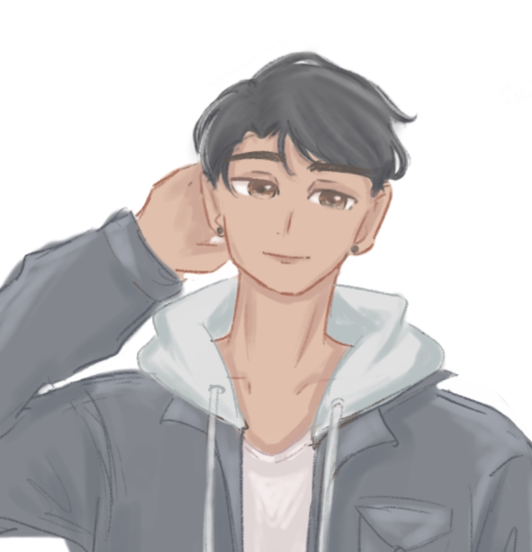

Mystery Marvel is a passionate group of enthusiasts dedicated to discovering the secrets and delights hidden in the world of blind boxes. Our mission, as a group of curious collectors and reviewers, is to explore, unbox, and share the fascinating stories behind each mystery package we come across.
We delve into the art, rarity, and surprise of each box, providing insightful reviews, thoughtful analysis, and a dash of playful speculation to help you navigate the exciting world of collectible curiosities. At Mystery Marvel, we're more than just a review group; we're a community united by the joy of discovery, always on the lookout for the next incredible find!
Driven by a love of the unexpected and a commitment to quality, we are constantly on the lookout for the latest trends and most unique finds from established and emerging creators. Our platform is a dynamic resource, bringing together like-minded collectors and enthusiasts in a vibrant network where ideas thrive and each unboxing is a new adventure.

Diane
Meet our Content Manager: Diane—an avid collector herself, she spends most of her time (and money...) on building her figurine collection. With the company since day one, she's passionate about sharing her own experiences and inspiring others to join.

Alex
Meet our Researcher: Alex is our resident coffee fiend, powering through mystery-box research one espresso shot at a time. Off the clock, he conquers video game worlds and meticulously assembles Gundams, LEGO sets, and anything else with tiny pieces—never missing a chance for a perfectly timed prank!

Rupert
Introducing our Multimedia Producer: Rupert—a relentlessly enthusiastic, delightfully peculiar creative force whose hard work fuels our mission to spread the thrill of mystery. By day, he’s a self-proclaimed “Pokémon Master,” and by night, his commitment to binge-watching One Piece is nothing short of legendary.